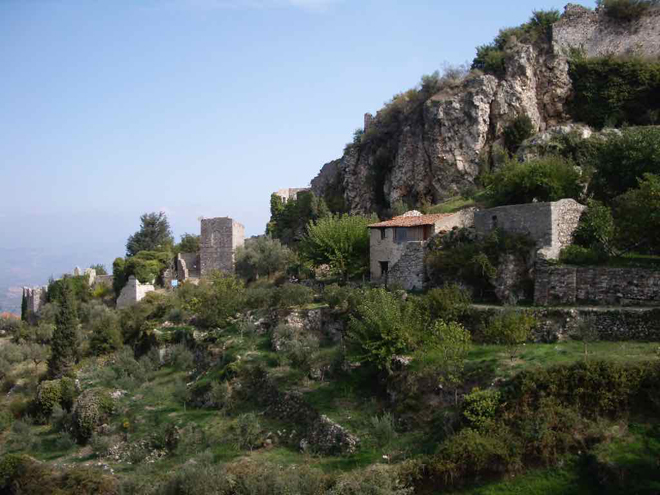
Above Pylos is the Ottoman Neokastro (new castle), which is in a good state of conservation, and looks out onto the island of Sphacteria, the bay of Navarino, and the city. It is one of the best preserved castles in Greece.
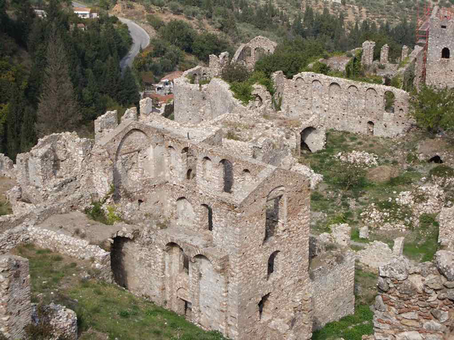
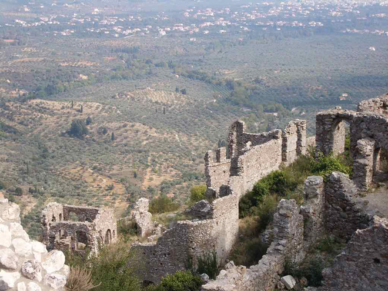
Inside the walls of the the Ottoman Neokkastro is the well-preserved Church of the Transfiguration of the Saviour, built by the Franks, later transformed into a mosque, then again into a Christian church.
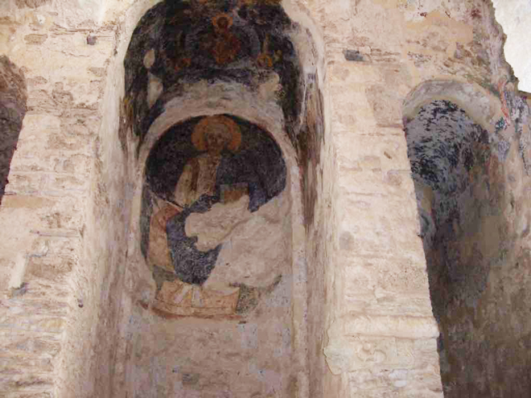
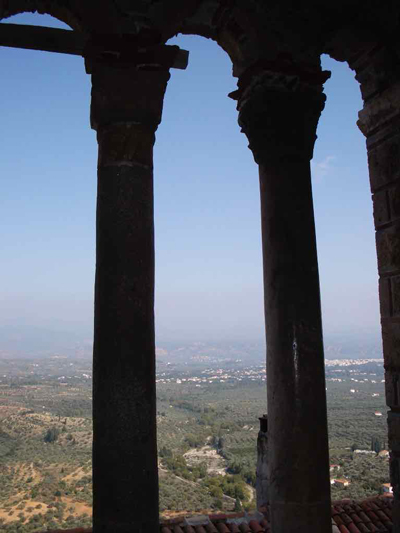
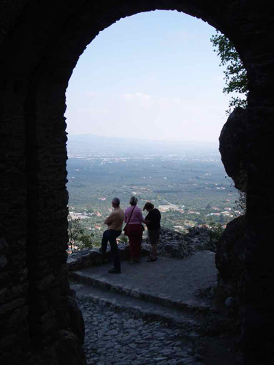
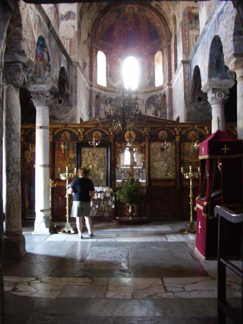
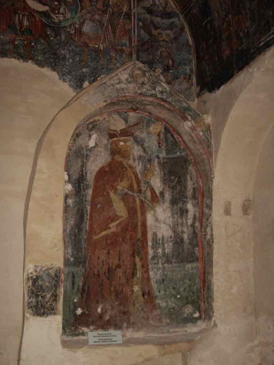
A stop on the way back to buy honey from a man selling it at the side of the road.
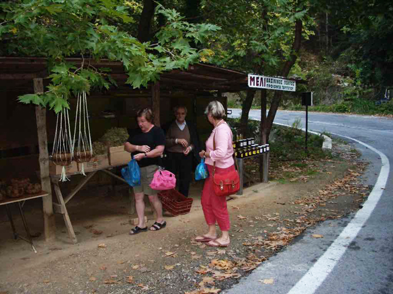
Our next stop was at the town of Nafplio - a pretty place where we had a good meal.
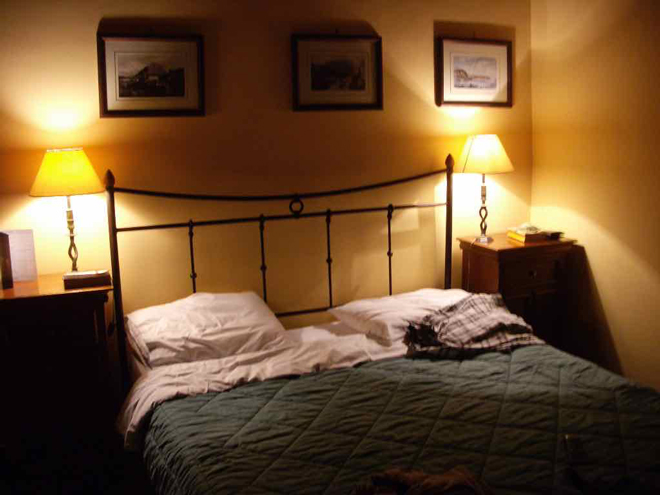
The next day we travelled onto Epidaurus to visit the huge theatre. In ancient times, this was said to have delighted Pausanias (a Greek traveler and geographer of the second century AD who lived in the time of Roman emperors Hadrian, Antoninus Pius, and Marcus Aurelius).
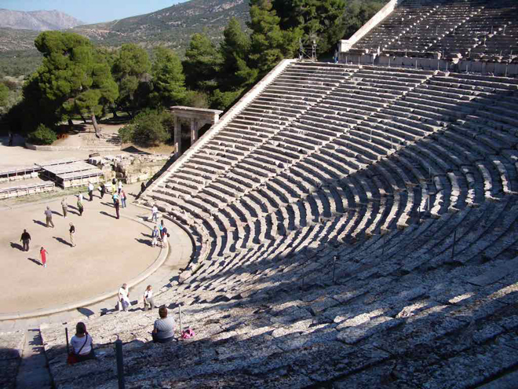
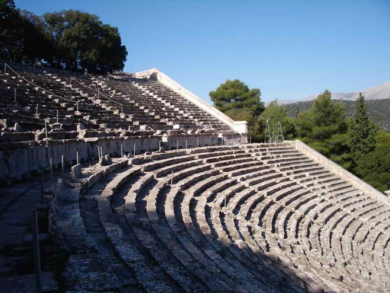
The ancient theatre of Epidaurus was designed by Polykleitos the Younger in the 4th century BC. The original 34 rows were extended in Roman times by another 21 rows. It seats up to 14,000 people. The theatre is admired for its exceptional acoustics, which permit almost perfect intelligibility of unamplified spoken words from the proscenium to all 14,000 spectators, regardless of their seating. Famously, tour guides have their groups scattered in the stands and show them how they can easily hear the sound of a match struck at centre-stage.
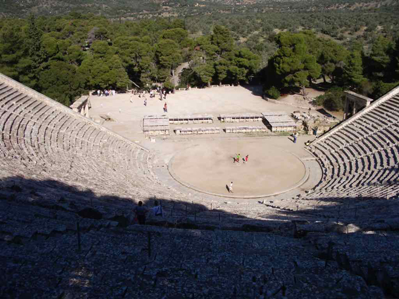
Also featuring in the theatre complex was the Stadion (stadium) where running races were held.
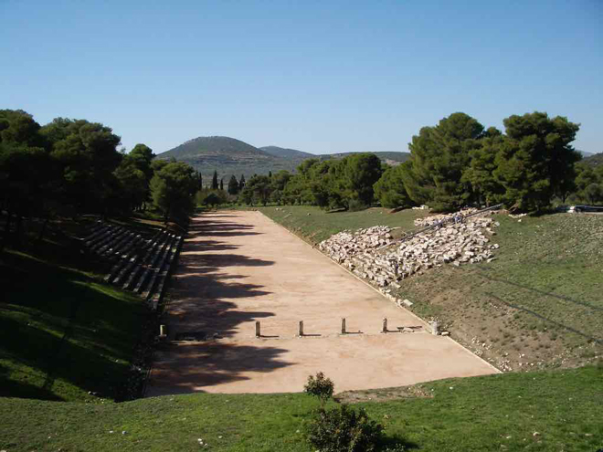
We then stopped in Gytheio for lunch which was lovely overlooking the harbour. We also found a deserted amphitheatre which was in dire need of restoration. lt was very hot so I took the opportunity to have a swim in the sea.
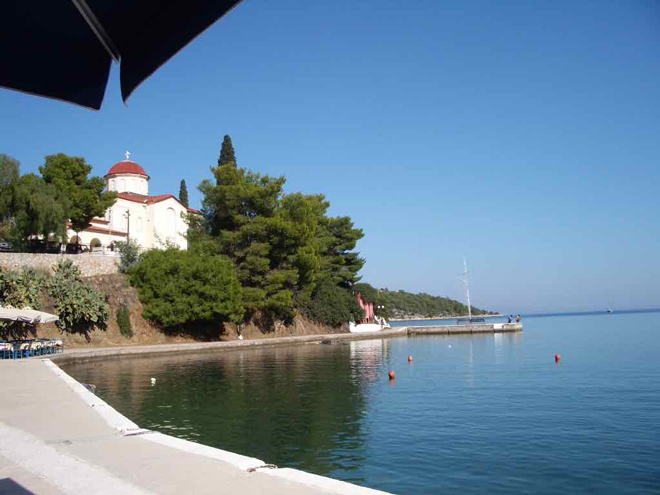
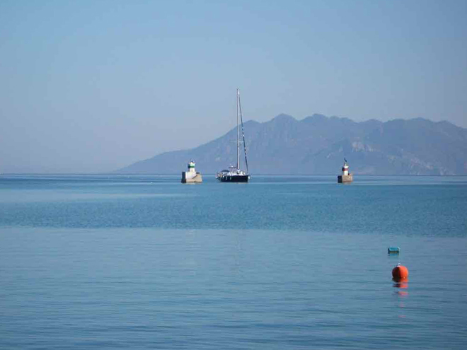
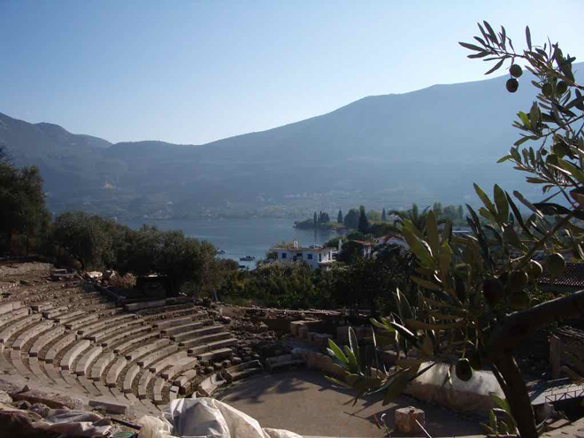
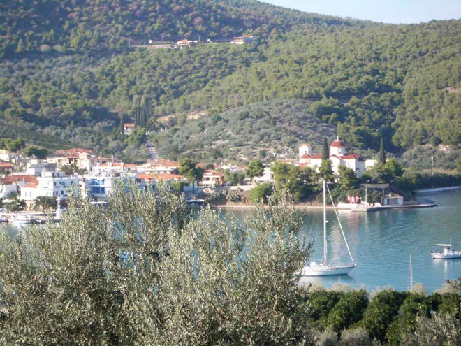
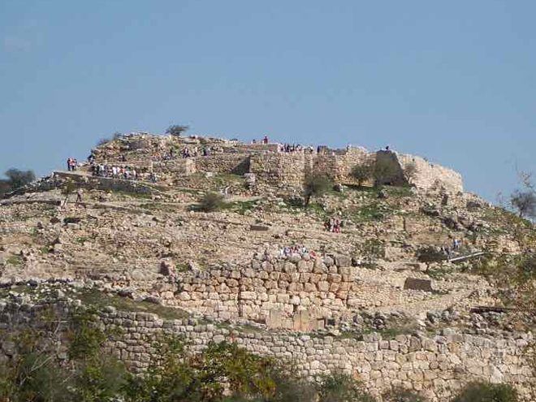
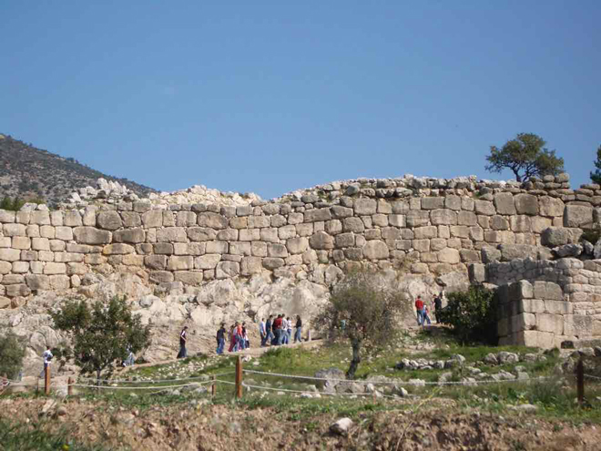
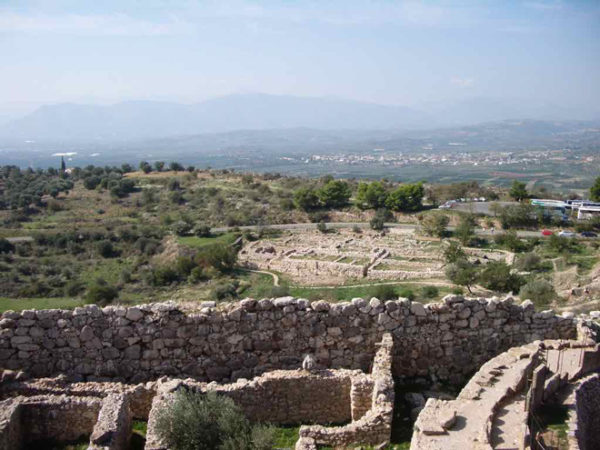
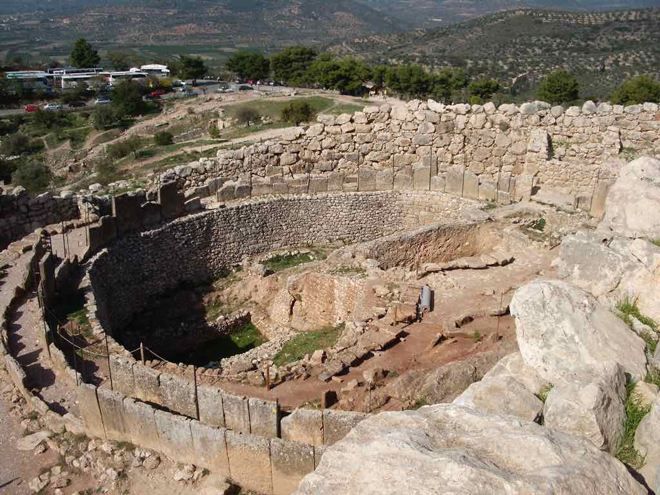
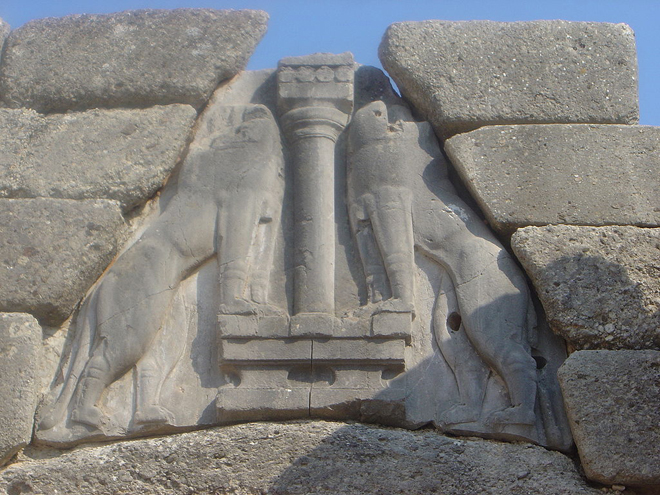
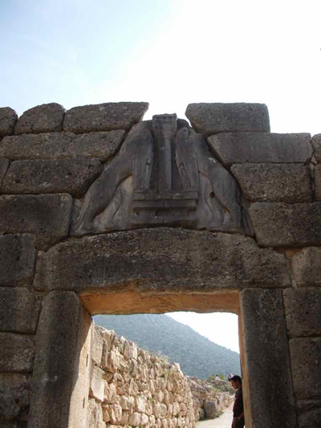
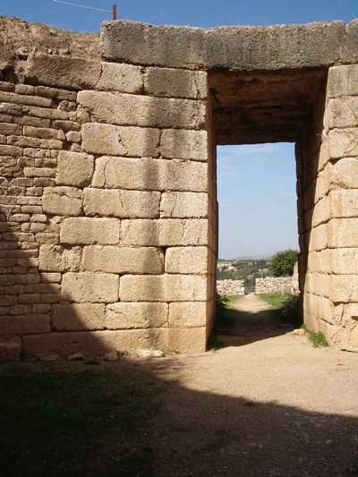
The Mask of Agamemnon is a gold funeral mask discovered at Mycenae by German archaeologist Heinrich Schliemann in 1876. He believed that he had found the body of the King Agamemnon, leader of the Achaeans in Homer's epic of the Trojan War, the Iliad, but modern archaeological research suggests that the mask dates to about 1600 BC, predating the period of the legendary Trojan War by about 400 years. The mask, now displayed in the National Archaeological Museum of Athens, has been described as the "Mona Lisa of prehistory".
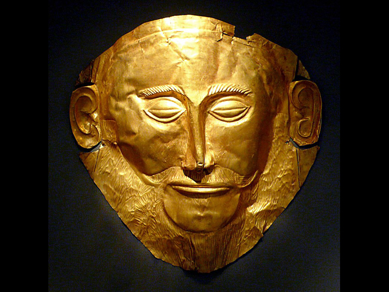
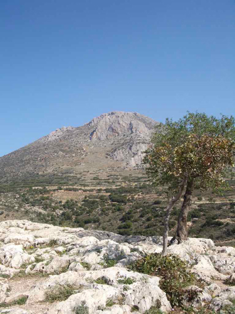
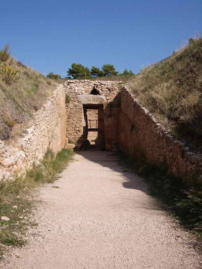
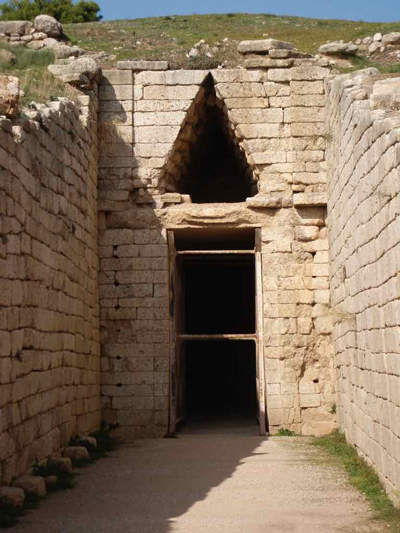
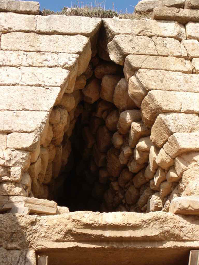
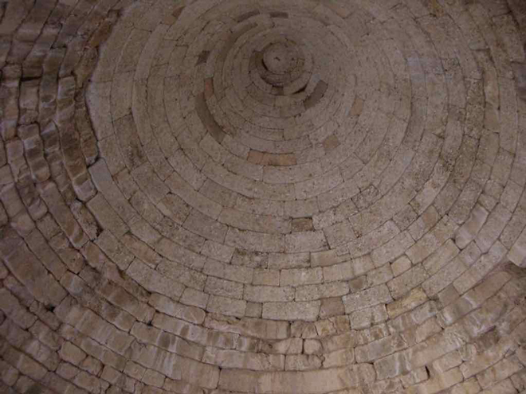
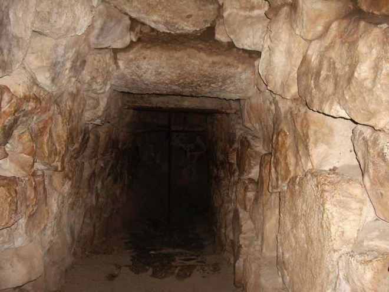
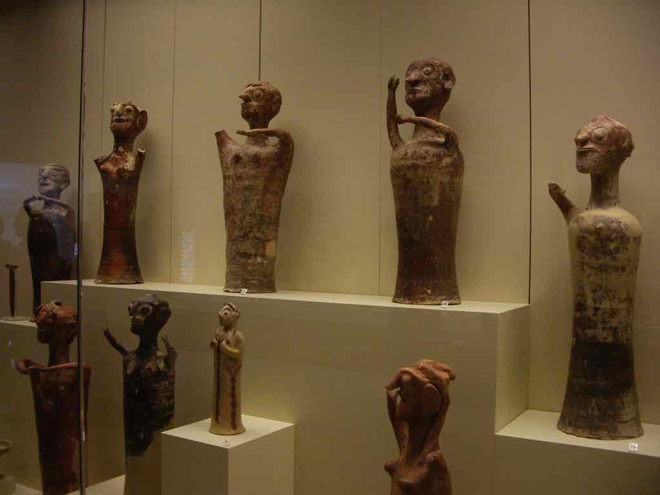